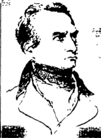
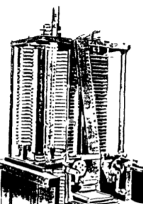

|
Меню
|
История создания ЭВМ Основным отличием вычислительной машины от таких счетных устройств, как счеты, арифмометр, калькулятор, заключается в том, что вся последовательность команд на вычисление предварительно записывается в память вычислительной машины и выполняется последовательно автоматически. Впервые принцип вычислительной машины с автоматическим выполнением команд предложил американский ученый Джон фон Нейман. Он описал основные узлы, которые должна содержать такая машина: память, представлявшей собой набор регистров, арифметико-логическое устройство (АЛУ), устройства ввода-вывода и устройства управления (УУ). Рисунок 1 Машина фон Неймана Первая счетная машина с хранимой программой была построена французским ученым Блезом Паскалем в 1642 г. Она была механической с ручным приводом и могла выполнять 2 операции - сложения и вычитания
Рисунок 2 Машина фон Неймана Немецкий математик Готфрид Лейбниц в 1672 г. построил механическую машину, которая могла делать 4 операции: сложения, вычитания, умножения и деления. Г. В. Лейбницу принадлежит идея использования двоичной системы счисления в вычислительных устройствах. Он первым описал двоичную систему счисления с цифрами 0 и 1, на которой основана современная компьютерная техника. Впервые машину, работающую по программе, разработал в 1834 г. английский ученый Чарльз Бэббидж. Она содержала запоминающее устройство, вычислительное устройство, устройство ввода с перфокарт и печатающее устройство. Команды считывались с перфокарты и выполняли считывание данных из памяти в вычислительное устройство и запись в память результатов вычислений. Все устройства машины Бэббиджа, включая память, были механическими и содержали тысячи шестеренок, при изготовлении которых требовалась точность, недоступная в XIX в.   Рисунок 3 - Чарльз Бэббидж (1792 - 1871) и его «аналитическая машина» Машина реализовала любые программы, записанные на перфокарте, поэтому впервые для написания таких программ потребовался программист. Первым программистом была англичанка Ада Ловлейс, в честь которой уже в наше время был назван язык программирования Ada. 
|
||

|
Электронно-вычислительная машина |
|---|